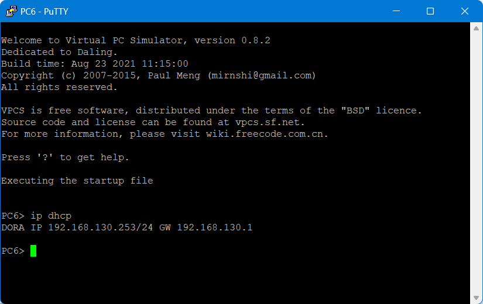

Tunnel EoIP sur MikroTik CHR avec IPsec
Dans ce tuto nous utiliserons GNS3
Si vous n'avez pas encore installé GNS3, je vous invite à faire un tour sur cours.rihan.fr
Pré-requis :
Pour mener à bien notre projet, nous aurons besoin de :
- Le logiciel GNS3
- La template MikroTik CHR téléchargé
Topologie :
Considérons le routeur R0 comme routeur qui donne accès à internet aux autres routeurs.
Nous allons donc créer un tunnel EoIP entre les routeurs R1, R2 et R3 afin qu'ils communiquent directement entre eux par un réseau sécurisé sans passer par R0 et de mettre en place et le service DHCP comme le montre l'image ci-dessous:

Configuration :
Dans un premier temps nous allons mettre les adresses IP dans nos différents routeurs. Ensuite nous allons mettre en place les tunnels EoIP entre les routeurs en même que le service DHCP pour chacun des routeurs.
Avez-vous compris ? Je m'explique. Prenons le cas où le routeur R1 doit faire office de DHCP pour les poste clients des routeurs R2 et de R3. Nous sommes d'accord que dans le cas de notre topologie il nous faudrait mettre en place les relais DHCP pour que cela soit possible ? Et pour éviter de mettre en place les relais DHCP, nous mettons en place des tunnels VPN pour permettre aux deux routeurs du tunnel d'etre dans le même domaine de diffusion.
Quand le routeur R1 sera server DHCP des postes clients des deux autres routeurs, on devra dans R1 deux tunnels (un tunnel vers R2 avec un id spécifique et un autre vers R3 avec également spécifique) car on ne peut associer deux routeurs distants simultanément dans un tunnel VPN. Après avoir créer ces deux tunnels dans R1, on devra maintenant créer dans R2 un tunnel vers R1 avec le même id que celui créer dans R1 vers R2 pour que la communication soit réciproque. Puis on fera autant dans le routeur R3pour établir la communication dans les deux sens avec R1. Et sans oublier créer un DHCP dans R1.
De même quand R2 sera routeur DHCP des postes clients des routeurs R1 et R3, nous allons procéder de la même manière que nous avions fait dans R1. Et après on refera la même chose quand R3 sera DHCP. En gros c'est faire le même travail trois fois si je peux dire ça comme ça.
Fini la théorie on passe à la pratique. Lançez vos GNS3 et allons-y.
Adressage des routeurs :
Dans R0 :
system identity set name=R0
address add address=10.10.10.1/24 interface=ether1
Dans R1 :
system identity set name=R1
ip address add address=10.10.10.2/24 interface=ether1
ip address add address=192.168.10.1/24 interface=ether2
Dans R2 :
system identity set name=R2
address add address=10.10.10.3/24 interface=ether1
ip address add address=192.168.20.1/24 interface=ether2
Dans R3 :
system identity set name=R3
address add address=10.10.10.3/24 interface=ether1
ip address add address=192.168.30.1/24 interface=ether2
Pour voir afficher les adresses IP attribuées, utiliser la commande :
ip address print
Partie 1 : Tunnel EoIP + DHCP dans R1
R1
Commençons par créer les deux tunnels puis ajouter un mot de passe ipsec aux tunnels
interface eoip/
add name=eoip-client-dhcp-r2 tunnel-id=0 remote-address=10.10.10.3 disabled=no allow-fast-path=no
add name=eoip-client-dhcp-r3 tunnel-id=1 remote-address=10.10.10.4 disabled=no allow-fast-path=no
set 0 ipsec-secret=iticparis.com
set 1 ipsec-secret=iticparis.com
Toute fois apres avoir fait un interface eoip print, mettez le numero du tunnel correspondant dans interface eoip set
Ensuite créer un bridge dans lequel nous mettrons les interfaces qui feront parties du même domaine de diffusion
interface bridge/
add name=bridge-dhcp-server-r1
add port bridge=bridge-dhcp-server-r1 interface=eoip-client-dhcp-r2
add port bridge=bridge-dhcp-server-r1 interface=eoip-client-dhcp-r3
add port bridge=bridge-dhcp-server-r1 interface=ether2
Utiliser les commandes suivantes pour afficher les interfaces bridges créees ou pour afficher les port qui appartiennent à un bridge :
interface bridge print
interface bridge port print
Maintenant que notre interface bridge est créée, mettons une adresse ip dessus :
address add address=192.168.110.1/24 interface=bridge-dhcp-server-r1
Passons maintenant à la mise en place de notre service DHCP
ip dhcp-server setup/
dhcp server interface: bridge-dhcp-server-r1
dhcp address space: 192.168.110.0
gateway for dhcp network: 192.168.110.1
address to give out: 192.168.110.2-192.168.110.254
dns servers: 192.168.110.1
lease time: 1d
A ce stade, tout est prêt pour le routeur R1 et nous pouvons voir dans l'image suivante, le PC1 obtenir une adresse ip venant du DHCP que nous avions crée.
R2
Comme nous l'avions dit au début un tunnel doit être mis en place des deux côtés pour assurer la communication des sous réseaux.
Commençons par créer le tunnel eoip
interface eoip/
add name=eoip-server-dhcp-r1 tunnel-id=0 remote-address=10.10.10.2 disabled=no allow-fast-path=no
set 0 ipsec-secret=iticparis.com
Puis créons l'interface bridge du routeur R2 avec une adresse ip du meme réseau que celui de l'interface bridge dur routeur R1.
interface bridge/
add name=bridge-dhcp-server-r1
add port bridge=bridge-dhcp-server-1 interface=eoip-server-dhcp-r1
add port bridge=bridge-dhcp-server-1 interface=ether3
Mettons une adresse ip à notre interface bridge :
address add address=192.168.110.2/24 interface=bridge-dhcp-server-r1
Point n'est besoin de mettre le service DHCP car dans ce premier cas c'est le routeur R1 qui s'en charge pour l'interface pour que nous avions bridger avec notre tunnel nouvellement créé.
En prenant alors le PC qui se trouve sur le port ether3 du routeur R2 (PC5), nous voyons bien qu'il a reçu une adresse ip du DHCP de notre routeur R1.
R3
Sans plus tarder passons au dernier routeur
Commençons par créer le tunnel eoip
interface eoip/
add name=eoip-server-dhcp-r1 tunnel-id=1 remote-address=10.10.10.2 disabled=no allow-fast-path=no
set 0 ipsec-secret=iticparis.com
Puis créons l'interface bridge du routeur R2 avec une adresse ip du meme réseau que celui de l'interface bridge dur routeur R1.
interface bridge/
add name=bridge-dhcp-server-r1
add port bridge=bridge-dhcp-server-1 interface=eoip-server-dhcp-r1
add port bridge=bridge-dhcp-server-1 interface=ether3
Mettons une adresse ip à notre interface bridge :
address add address=192.168.110.3/24 interface=bridge-dhcp-server-r1
En prenant alors le PC qui se trouve sur le port ether3 du routeur R2 (PC5), nous voyons bien qu'il a reçu une adresse ip du DHCP de notre routeur R1.
Partie 2 : Tunnel EoIP + DHCP dans R2
Ici nous allons refaire la même chose que nous avions fait précédement.
Je vous conseille de tout commencer par le routeur concerné (R2 dans ce cas présent)
R2
Voici toute la nouvelle config à ajouter :
Création du tunnel EoIP
interface eoip/
add name=eoip-client-dhcp-r1 tunnel-id=2 remote-address=10.10.10.2 disabled=no allow-fast-path=no
add name=eoip-client-dhcp-r3 tunnel-id=3 remote-address=10.10.10.4 disabled=no allow-fast-path=no
set "numero-tunnel-afficher dans-print" ipsec-secret=iticparis.com
set "numero-tunnel-afficher dans-print" ipsec-secret=iticparis.com
Création du bridge et assignation des interfaces
interface bridge/
add name=bridge-dhcp-server-r2
add port bridge=bridge-dhcp-server-r2 interface=eoip-client-dhcp-r1
add port bridge=bridge-dhcp-server-r2 interface=eoip-client-dhcp-r3
add port bridge=bridge-dhcp-server-r2 interface=ether2
Adresse du bridge
ip address add address=192.168.120.1/24 interface=bridge-dhcp-server-r2
Service DHCP
ip dhcp-server setup/
dhcp server interface: bridge-dhcp-server-r2
dhcp address space: 192.168.120.0
gateway for dhcp network: 192.168.120.1
address to give out: 192.168.120.2-192.168.120.254
dns servers: 192.168.120.1
lease time: 1d
Dans l'image ci-dessous, nous pouvons bien voir que le PC connecté au port ether2 du routeur R2 (PC4) à bien reçu une adresse IP venant du routeur R2.
R1
Création du tunnel EoIP
interface eoip/
add name=eoip-server-dhcp-r2 tunnel-id=2 remote-address=10.10.10.3 disabled=no allow-fast-path=no
set "nombre-tunnel-affcher-dans-print" ipsec-secret=iticparis.com
Création du bridge et assignation des interfaces
interface bridge/
add name=bridge-dhcp-server-r2
add port bridge=bridge-dhcp-server-r2 interface=eoip-server-dhcp-r2
add port bridge=bridge-dhcp-server-r2 interface=ether3
Adresse du bridge
ip address add address=192.168.120.2/24 interface=bridge-dhcp-server-r2
De même pour le PC2 connecté à l'interface ether2 du routeur R1 que nous avions mis dans notre à bien reçu l'adresse IP du routeur distant R2.
R3
Création du tunnel EoIP
interface eoip/
add name=eoip-server-dhcp-r2 tunnel-id=3 remote-address=10.10.10.3 disabled=no allow-fast-path=no
set "nombre-tunnel-affcher-dans-print" ipsec-secret=iticparis.com
Création du bridge et assignation des interfaces
interface bridge/
add name=bridge-dhcp-server-r2
add port bridge=bridge-dhcp-server-r2 interface=eoip-server-dhcp-r2
add port bridge=bridge-dhcp-server-r2 interface=ether4
Adresse du bridge
ip address add address=192.168.120.3/24 interface=bridge-dhcp-server-r2
Il en va de même pour le PC9 qui lui aussi à son tour à reçu une adresse IP du routeur R2. Et on voit bien que les tests de ping entre différent PC passent sans problème.
Partie 3 : Tunnel EoIP + DHCP dans R3
Je suppose que vous avez compris le principe, alors sans plus tarder allons-y.
R3
Création du tunnel EoIP
interface eoip/
add name=eoip-client-dhcp-r1 tunnel-id=4 remote-address=10.10.10.2 disabled=no allow-fast-path=no
add name=eoip-client-dhcp-r2 tunnel-id=5 remote-address=10.10.10.3 disabled=no allow-fast-path=no
set "numero-tunnel-afficher-dans-print" ipsec-secret=iticparis.com
set "numero-tunnel-afficher-dans-print" ipsec-secret=iticparis.com
Création du bridge et assignation des interfaces
interface bridge/
add name=bridge-dhcp-server-r3
add port bridge=bridge-dhcp-server-r3 interface=eoip-client-dhcp-r1
add port bridge=bridge-dhcp-server-r3 interface=eoip-client-dhcp-r2
add port bridge=bridge-dhcp-server-r3 interface=ether2
Adresse du bridge
ip address add address=192.168.130.1/24 interface=bridge-dhcp-server-r3
Service DHCP
ip dhcp-server setup/
dhcp server interface: bridge-dhcp-server-r3
dhcp address space: 192.168.130.0
gateway for dhcp network: 192.168.130.1
address to give out: 192.168.130.2-192.168.130.254
dns servers: 192.168.130.1
lease time: 1d
L'image suivante nous montre que le PC7 à reçu une adresse IP et nous voyons bien comment elle réusit à pinger les autres postes clients qui ne sont pas dans le même sous réseau que lui. La connectivité entre les trois routeurs est sans problème.
R1
Création du tunnel EoIP
interface eoip/
add name=eoip-server-dhcp-r3 tunnel-id=4 remote-address=10.10.10.4 disabled=no allow-fast-path=no
set "nombre-tunnel-affcher-dans-print" ipsec-secret=iticparis.com
Création du bridge et assignation des interfaces
interface bridge/
add name=bridge-dhcp-server-r3
add port bridge=bridge-dhcp-server-r3 interface=eoip-server-dhcp-r3
add port bridge=bridge-dhcp-server-r3 interface=ether4
Adresse du bridge
ip address add address=192.168.130.2/24 interface=bridge-dhcp-server-r3
Le PC3 a bien reçu son adresse IP
R2
Création du tunnel EoIP
interface eoip/
add name=eoip-server-dhcp-r3 tunnel-id=5 remote-address=10.10.10.4 disabled=no allow-fast-path=no
set "nombre-tunnel-affcher-dans-print" ipsec-secret=iticparis.com
Création du bridge et assignation des interfaces
interface bridge/
add name=bridge-dhcp-server-r3
add port bridge=bridge-dhcp-server-r3 interface=eoip-server-dhcp-r3
add port bridge=bridge-dhcp-server-r3 interface=ether4
Adresse du bridge
ip address add address=192.168.130.3/24 interface=bridge-dhcp-server-r3
Enfin le PC6 aussi à reçu une adresse IP.

Récapitulatif de la configuration :
R1
R2
R3
Merci pour votre attention ça été long mais ça vallait le coup de s'y mettre.
Lire le chapître suivant :
« OCS Inventory NG sous Debian 11 »